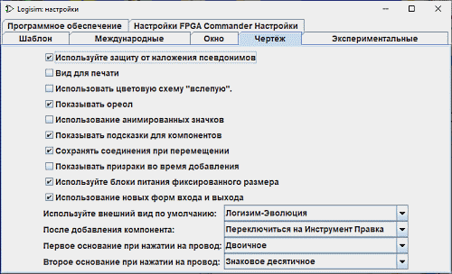

Вкладка «Холст»

На этой вкладке находятся настройки, влияющие на поведение редактора схем на холсте.
-
Использовать сглаживание (Anti-aliasing): активирует сглаживание шрифтов и графики. Проводники и контуры элементов на экране и при печати будут выглядеть более гладкими.
-
Цвета для дальтоников: изменяет цветовую схему сигналов на проводниках для улучшения восприятия пользователями с нарушениями цветового зрения.
-
Показывать ореол выделения: определяет, нужно ли рисовать полупрозрачный зеленовато-голубой овал вокруг компонента или инструмента, атрибуты которого в данный момент отображаются в таблице атрибутов.

-
Использовать анимированные значки: включает или выключает анимацию значков на панелях инструментов.
-
Показывать подсказки для компонентов: указывает, следует ли отображать всплывающие подсказки при наведении указателя мыши на компоненты. Например, при наведении на контакт подсхемы отобразится метка этого контакта внутри подсхемы. Наведение на один из концов разветвителя покажет, каким битам шины соответствует этот провод. Компоненты библиотек Коммутаторы, Арифметика и Память также предоставляют информацию о своих входах и выходах через эти подсказки.
-
Сохранять соединения при перемещении: указывает, должна ли программа автоматически перестраивать и добавлять проводники при перемещении компонентов, чтобы не разрывать существующие связи. Опция включена по умолчанию. Вы можете временно отключить автотрассировку, зажав клавишу Shift во время перемещения. Если опция выключена в настройках, зажатие клавиши Shift во время перемещения временно активирует сохранение соединений.
-
Показывать контур при добавлении: при включении этой опции во время перемещения курсора с выбранным инструментом на холсте будет отображаться светло-серый контур (призрак) будущего компонента, показывающий место его установки.
-
Использовать блоки схем фиксированного размера: по умолчанию новые подсхемы в проектах создаются со стандартным фиксированным размером корпуса. Если опция отключена, размер блока будет автоматически подстраиваться под количество портов и структуру схемы. Данный параметр также можно переопределить индивидуально для конкретной подсхемы через её атрибут Использовать фиксированный размер блока.
-
Использовать новые символы входов/выходов: при включении этой опции контакты входов и выходов отображаются в виде новых графических символов (
 ). Если опция выключена, будут использоваться классические прямоугольные контакты Logisim (
). Если опция выключена, будут использоваться классические прямоугольные контакты Logisim (
 ). При изменении этой опции программа предложит автоматически преобразовать контакты в текущем проекте.
). При изменении этой опции программа предложит автоматически преобразовать контакты в текущем проекте.
-
Использовать внешний вид по умолчанию от: позволяет выбрать стиль отображения встроенных компонентов (например, памяти) по умолчанию в соответствии с разными версиями программы: Logisim-Classic, Logisim-HolyCross или Logisim-Evolution.
-
После добавления компонента: по умолчанию после добавления единичного компонента программа автоматически возвращается к инструменту «Выбор». Вы можете изменить это поведение так, чтобы выбранный инструмент добавления оставался активным для последовательной установки нескольких одинаковых элементов, пока вы вручную не переключитесь на инструмент «Выбор» (такое поведение было стандартным в старых версиях Logisim).
-
1-я система счисления цепей: настраивает систему счисления для отображения значений сигналов при клике по проводнику инструментом «Нажатие». Значение отображается временно, пока пользователь не кликнет в другом месте холста.

-
2-я система счисления цепей: настраивает дополнительную систему счисления для одновременного отображения значений вторым форматом.
Далее: Вкладка «Моделирование».